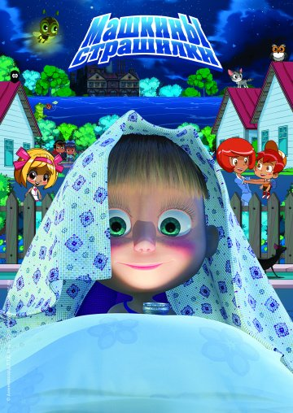
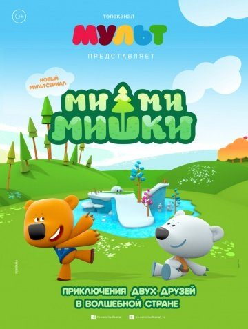
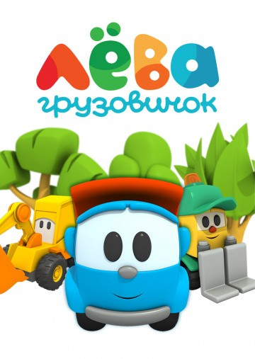
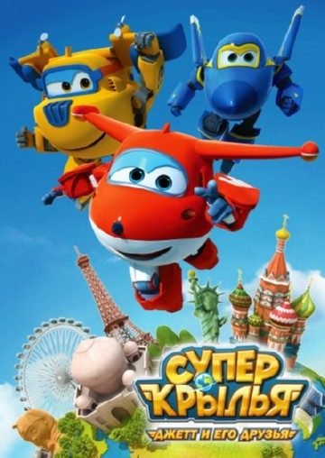
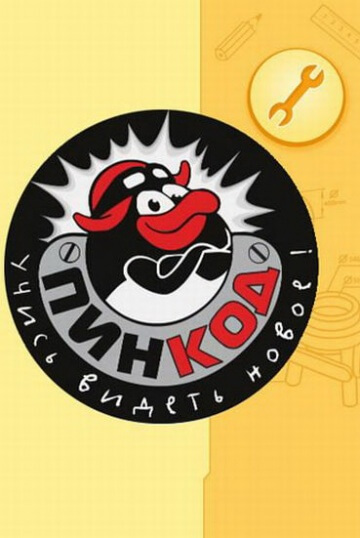
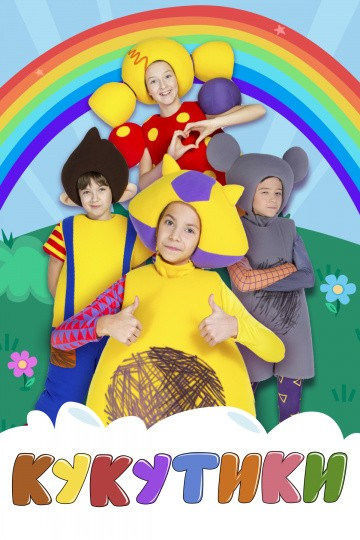
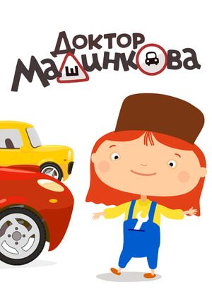
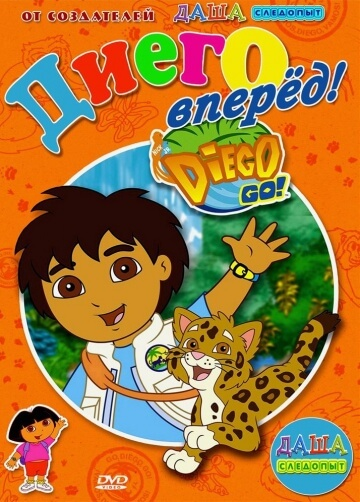
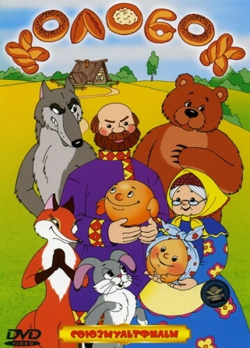
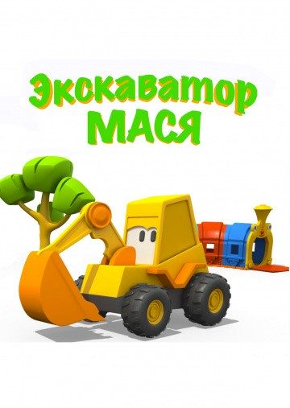

Представляем вашему вниманию подборку развивающие мультфильмы.
Топ 10 лучших мультфильмов:

Жанр: мультфильм, детский, комедия, мультсериал
Режиссёр: Олег Кузовков, Денис Червяцов, Ринат Газизов
В ролях: Алина Кукушкина
Всеми любимый российский мультик «Маша и Медведь» повлиял на создание еще одного мультсериала, где главной героиней становится все та же маленькая девочка по имени Маша, известная нам своим задорным характером и весельем. Судя по всему, Маша ничего не боится, раз пришла в гости к огромному Медведю, да еще и подружилась с ним. Поэтому неудивительно, что теперь она хочет поведать маленьким зрителям различные страшные истории. Вот это да… зачем же тогда маленьким деткам смотреть мультсериал? Чтобы потом бояться спать по ночам? А вот и нет. В мультсериале Маша наоборот пытается развеять все страхи и сомнения, которые могут закрасться к ребенку в голову, как раз ночью, когда все вещи напоминают ужасных монстров, а воображение рисует страшные картинки. Маша хочет помочь деткам понять, что все это выдумки и сказки, чтобы ребята не боялись становиться самостоятельными и оставаться одни в своей комнате. Кроме того, мультсериал действительно несет полезную функцию. И детям, и родителям рассказывается о том, как помочь малышу избавиться от страхов, например, кто – то боится темноты, кто – то воды и так далее. Этот страх может и повзрослеть вместе с ребенком. Поэтому Маша в игровой и веселой форме, на фоне красочных картиной и интересных героев, помогает Вашему ребенку забыть о своих фобиях еще в раннем детстве.

Жанр: мультфильм, комедия, детский, мультсериал
Режиссёр: Алексей Миронов, Артур Толстобров
В ролях: Полина Кутепова, Наталия Медведева,
Дарья Мазанова
Этот добрый и красочный современный мультсериал точно придется по душе каждому маленькому ребенку, а у родителей снова появляется возможность занять свое чадо с пользой для его ума и развития. Как и все современные мультфильмы, этот также нацелен на развитие и обучение ребенка. Причем, не конкретным наукам или азам какого – то дела, а общему развитию и умению с детства различать все главные человеческие ценности. Как водится, героями подобных мультсериалов выступают либо забавные существа, либо веселые зверята. Здесь, как уже понятно из названия, главенствуют звери, то есть, мишки. Два красочных и чень милых зверька, совсем не похожих на настоящих огромных медведей, будут проводить с Вашим ребенком некоторое время с пользой. Один медвежонок – бурый, имя которого Иннокентий, а вот второй мишка – полярный, белый, и зовут его просто Тучка. В каждой серии мультсериала наши главные герои будут попадать в различные приключенческие ситуации, из которых они должны найти самый верный выход. Попутно с этим, наши зверята будут познавать окружающий мир, давая эти знания в доступной форме и вашим детям. «Мимимишки» - очень милый мультик о том, что важно, нужно и интересно.

Жанр: детский, мультфильм, мультсериал
Режиссёр:Мария Поддубная
В ролях: Ольга Жуланова
Современный отечественный мультсериал для самых маленьких малышей, который преследует цель обучать и развивать ребенка в игровой и анимационной форме. Несмотря на том, что мультфильм не так давно на наших экранах, он уже заслужил большую популярность среди маленьких ценителей мультипликационных сериалов. Главным героем здесь является маленький грузовичок по имени Лева, как не сложно догадаться уже из названия. Действие мультсериала происходит на детской площадке, где Лева учится собирать различные модели, попутно обучая Вашего ребенка. Помимо Левы, главной героиней мультфильма является еще и девочка Маша – помощница Левы. Суть мультфильма в том, что Лева каждый день привозит на игровую площадку различные детали машинок, самолетов и прочих технических моделей, который они потом с Машей должны будут собрать, на глазах у вашего малыша. Этот мультсериал позволит маленькому телезрителю осваивать азы рисования, моделирования, раскрашивания и многого другого от серии к серии. А игровая форма и попутные события, происходящие в жизни главных героев, точно увлечет любого ребенка. Детки научатся разбираться в моделях машин и другой различной техники, малыши научатся различать цвета и формы. А веселые песенки в мультфильмы позволят деткам попутно развивать еще и музыкальный слух ребенка.

Жанр: мультфильм, фантастика, приключения, семейный, мультсериал
Режиссёр:Benjie Randall, Джош Селиг
В ролях: Уилл Блэгроув, Luca Padovan, Evan Smolin, Harrison Bajracharya, Heather Edwards,
Emma Fusco, Junah Jang, Jl Mount, Ayusha Shrestha, Гари Литман
Этот современный иностранный мультсериал снят в очень хорошем качестве и вышел на российские телеэкраны совсем недавно. Поэтому сейчас он с каждым днем все больше набирает популярность. Очень яркий и красочный мультипликационный сериал точно придется по вкусу Вашему маленькому ребенку, причем, любого возраста, судя по тому, какая идея вкладывалась в его создание. Но особенно его приятно посмотреть будет маленьким мальчикам, которые уже начали интересоваться окружающим миром, да и главные герои по своим техническим параметрам ближе все – таки к мальчишеской аудитории. Итак, главный герой этого мультфильма – самолетик по имени Джетт. Почему супер – крылья? Да потому, что он самый быстрый изо всех других самолетиков в мире. Также в мультсериале есть команда его друзей, таких же самолетиков – трансформеров (очень популярная и интересная тема для детей сейчас). Эти самолетики занимаются доставкой различных вещей по всем странам и городам мира. За весь мультсериал наш маленький, но прыткий Джетт должен посетить более сорока стран и пятидесяти городов. Но самое интересное здесь то, что во время путешествий Джетта, Ваш ребенок будет узнавать много нового о каждой стране или городе, где побывает самолетик. Ребенку будут рассказаны обычаи и традиции, описана культура, даже выучены с ним несколько новых слов на каждом иностранном языке. Такой мультфильм не только интересен, но и очень полезен маленькому зрителю.

Жанр: мультфильм, детский, мультсериал
Режиссёр: Алексей Горбунов, Светлана Мардаголимова, Александра Аверьянова
В ролях:Алексей Горбунов, Светлана Мардаголимова, Александра Аверьянова
Светлана Письмиченко, Михаил Черняк, Андрей Лёвин
Всеми любимый и всем известный мультсериал о забавных, добрых и умных зверятах, именуемых смешариками, получил продолжение, целью которого является привлечение детей к научному прогрессу, да и вообще к науке, к технике, к изобретательству и прочим умным и необходимым ребенку вещам. Здесь мы все также будем наблюдать известных нам героев: любопытных и еще маленьких Кроша и Ежика, красавицу Нюшу, романтичного Бараша, сердобольную Совунью, рассудительного Карыча, изобретателя Лосяша, мастера на все руки Пина и хозяйственного Копатыча. Все события данного мультфильма происходят с момента изобретения Пином своеобразного корабля под названием Шаролет, который может путешествовать абсолютно везде: начиная с космоса и заканчивая морским дном. Теперь наши зверята отправляются на исследование всей Земли, постоянно попадая в различные приключенческие ситуации. Задача Пина и Лосяша заключается в том, чтобы просветить маленьких зрителей о том, как устроен наш окружающий мир. Помимо этого, ребята узнают информацию про известных ученых, получавших Нобелевскую премию за вклад в науку. Этот мультфильм будет чрезвычайно полезен и интересен абсолютно всем маленьким и любознательным ребятам.

Жанр: мультфильм, детский, мультсериал
Режиссёр: Рустам Салахов, Артур Днепровский
В ролях: ---
Кукутики это канал предназначенный для детской аудитории, но кроме этого он еще является и новым музыкальным проектом. В состав команды входит пять участников, ими стали Очаровательный поросенок, Веселая мышка, Храбрый пилот, Девочка у которой золотые косички, а также непоседливый Рэпер. Кроме этого постоянно к ним приходит гость, которым является БоксМен, и собравшись одной командой они сразу же принимаются устраивать невероятное и очень развлекательное шу, которое больше похоже на музыкальный клип. Кроме этого в нем могут принять участие даже простые маленькие зрители, они могут с легкостью подпевать участникам, ведь они всегда поют только детские песенки и все они известны практически каждому малышу. Также они смогут танцевать вместе с ними, повторяя все движения, но может кто-то и придумает свои собственные. С помощью этой программы юные зрители смогут не только здорово повеселиться, но и даже получить навыки в хореографии. В гостях у Кукутиков малышам никогда не будет скучно, но и также они смогут получить общее развитие. С главными героями не составит труда выучить буквы, не только русские, но и даже английские, а также цифры, и получить другую информацию, которая им в дальнейшем сильно пригодится.

Жанр: Детский, мультсериал, мультсериал
Режиссёр: Дмитрий Карпухин
В ролях: ---
Этот современный российский мультсериал будет крайне полезен даже самым маленьким деткам, а их родителям обязательно нужно обратить внимание на данный мультфильм, который обучает детей тому, что крайне необходимо в нашем современном мире. Данный мультсериал в игровой и интересной форме обучает Ваших детей дорожному движению, но не так сухо и опосредовано, как это делают, например, в детском саду, а полно, открыто и очень подробно. Благодаря этому мультсериалу ваши дети смогут ознакомиться со всеми дорожными знаками и прочими правилами дорожного движения. Главная героиня здесь – доктор Машинкова, к которой ежедневно обращаются пациенты, попавшие в различные аварии из – за своей невнимательности и неосторожности. Доктор Машинкова подробно разбирает каждый случай в отдельности, указывая на то, кто и почему виноват, и как стоит себя вести, чтобы в будущем такого избежать. Также, детки уже в раннем возрасте узнают о разнообразных моделях машин, кое – что об их внутреннем устройстве, о починке и прочем. Еще, ребята узнают, для чего нужны те или иные автомобили, в какой местности лучше использовать такую – то машину. Данный мультсериал будет интересен маленьким мальчикам в особенности. Но, судя по тому, сколько в нашей стране водителей женщин, маленьких девочек тоже нужно приучать не только к правилам поведения на дороге в качестве пешехода, но и водителя.

Жанр: мультфильм, семейный, мультсериал
Режиссёр: Кэти МакУэйн, Аллан Якобсен, George Chialtas
В ролях: Рози Перес, Джейк Т. Остин, Килер Сэндхаус, Хосе Селая, Констанца Сперакис,
Габриела Айсинберг, Brandon Zambrano, Томас Шарки, Jeremy Kuszel, Себастьян Арселус
Этот иностранный мультсериал появился на российских телеэкранах уже десять лет назад и за эти годы заслуженно получил целую армию маленьких поклонников. Мультсериал создан все с той же самой целью, то есть, развитие ребенка, привлечение его интереса, развлечение, да и просто приятное времяпрепровождение. Кто смотрел «Дашу – путешественницу» с большим интересом, тот будет в восторге от этого мультсериала однозначно, так как мультфильм «Диего, вперед» является своеобразным продолжением, а, лучше сказать, что здесь мы видим перекличку между персонажами, сюжетами и прочим подобным. Главным героем здесь является маленький восьмилетний мальчик по имени Диего Маркес. Помимо него, в мультсериале фигурирует и его сестра по имени Алисия. Дети занимаются благим и интересным делом: они помогает различным животным в тропических лесах, попавшим в неприятные, а то и опасные ситуации. Попутно со своими приключениями Диего и Алисия обучают и Ваших детей: встречая различных зверей, которые не водятся в наших широтах, ребята рассказывают о них, о том, как они общаются между собой, какие издают звуки, какие оставляют следы, что кушают и многие другие детали. А главная фишка мультфильма в том, что одновременно со всем детки еще и изучают английский язык.

Жанр: мультфильм, короткометражка
Режиссёр: Роман Давыдов
В ролях: ---
Разве есть на свете дети, ни разу не слышавшие или не читавшие сказку про Колобка? Если есть, то этот советский мультик непременно будет им интересен и свеж. Да и тем, кто уже знаком с этим персонажем, будет приятно еще раз увидеть любимую историю. Жили – были Дед, да Баба, у которых так и не появилось детей к их преклонному возрасту. А уж очень хотелось. Тут – то и придумали они очень хитрый и необычный способ, дабы получить хоть кого – нибудь маленького, да разговорчивого. Сделали они все, как задумали и получился у них Колобок – существо необычное, на булку круглую похожее, только еще разговаривать умел. И все бы ничего, если бы в тот же самый день Колобок не укатился, упав с окна. С этого момента и начались его опасные приключения. На пути героя постоянно будут встречаться различные хитрые звери, желающие его съесть, да только Колобок еще хитрее: он им песенку споет, да и укатится дальше своей дорогой. Так бы все и продолжалось, не встреться на пути Колобка лиса. А лисы, как известно, существа очень умные, да и хитрости в них больше, чем в ком – либо. Уж она – то все сделала, чтобы Колобка поближе к себе приманить, да съесть его. Вот теперь и вся загадка: сможет ли лиса Колобка скушать или же он обманет ее, как и других животных?

Жанр: детский, мультфильм, мультсериал
Режиссёр: Мария Поддубная
В ролях: Мария Поддубная
Этот современный российский мультсериал однозначно стоит показать своим маленьким деткам, дошкольникам он будет особенно интересен, так как вместе с главным героем ребята будут находить ответы на все интересующие их вопросы. Главный герой этого мультфильма – желтый малыш – экскаватор по имени Мася. Он совсем еще маленький, как и зрители, наблюдающие за ним, он еще многого не знает и не понимает, но очень сильно хочет разобраться в том, как устроен мир. Каждый день, играя на детской площадке, Мася решает все новые и новые задачки, еще не открытые до этого детским умом. На протяжении всего эпизода за кадром звучит голос, который задает нашему герою разнообразные вопросы, помогая после найти ему на них ответ. Во время просмотра мультсериала Ваш ребенок тоже может поучаствовать в игре. Например, когда Мася подойдет к Волшебной Карусели и та предложит экскаватору найти какой – либо предмет или что – то подобное, пока не прозвучал правильный ответ, Ваш малыш тоже может подумать и решить предложенную задачку. Стоит помнить, что в игровой форме дети обучаются очень легко, ведь это кажется им игрой, а не обучением, поэтому каждому маленькому ребенку будет интересно провести время с таким же маленьким, добродушным и любознательным героем, как и он сам.